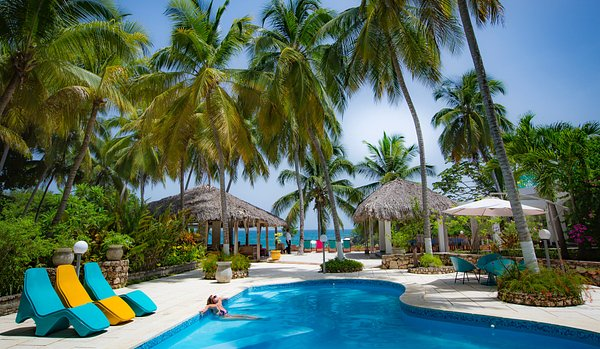
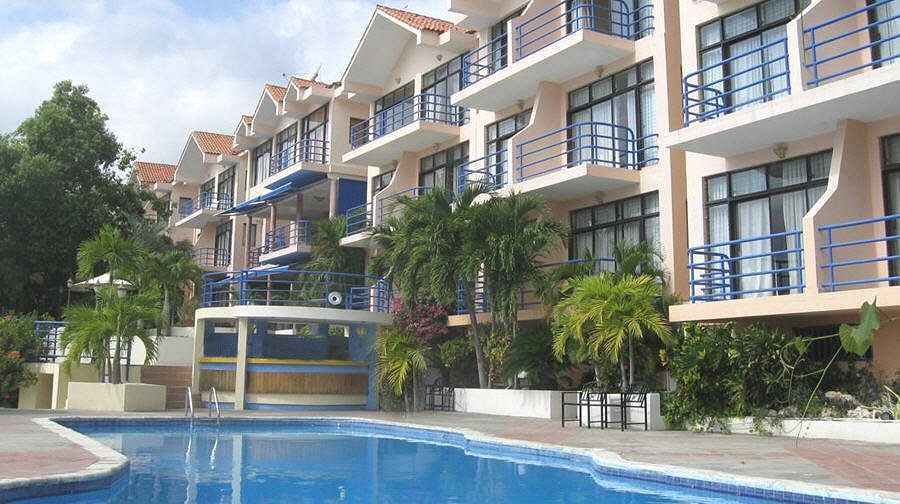

Détente à Raymond les Bains
Vue aérienne du Port

Lakou Nwe-York

L'eau turquoise de Bassin Bleu

Image la rue du commerce

Place Toussaint Louverture

Hotel Manoir Adriana

Hotel-cyvadier

Cap-Lamandou-Hotel